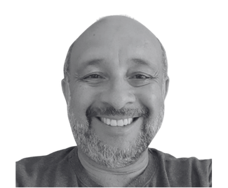

Organized by
Capella Days 2025 is organized by Obeo and Thales.
Capella Days regularly brings together the community of Capella and Arcadia:
Capella Days is your opportunity to learn from Capella ecosystem members!
Benefit from valuable best practices and industrial feedback based on real-world applications.
Capella Days 2025 is organized by Obeo and Thales.
Capella Days 2025 is sponsored by vibrant members of the Capella ecosystem:
You are a provider of services or products related to Capella?
Support the event and gain visibility from the Capella practitioners by sponsoring Capella Days.
| Time | Talks | Speakers |
|---|---|---|
| 3:30 pm UTC+1 | Welcome and Introduction | |
| 3:35 pm UTC+1 | The S80 Submarine Systems Engineering Journey defense | sustainment | rams |
José Torres (Navantia) |
| 4:15 pm UTC+1 | Tailoring MBSE and ARCADIA for a Complex Ground-Breaking Space Program outernet | mbse tailoring | tools integration |
Vincenzo D'Onofrio (Rivada Space Networks) Sahil Metta (Rivada Space Networks) |
| 4:55 pm UTC+1 | Capella as a Vector of Interoperability Between Practices interoperability | efficiency | frugality | project management |
Bruno Vuillemin (Capgemini Engineering) |
| 5:35 pm UTC+1 | Closing |
3:30 pm UTC+1 = 3:30 pm CET (Paris) = 11:30 am UTC-3 (Brasilia) = 9:30 am EST (New York) = 6:30 am PST (Los Angeles)
| Time | Talks | Speakers |
|---|---|---|
| 9:00 am UTC+1 | Welcome and Introduction | |
| 9:05 am UTC+1 | Integrating Mission Engineering and Model-Based Systems Engineering: An ARCADIA-Capella Approach mission engineering | operational requirements | system-of-systems |
Ebrahim Aly (UNSW Canberra) Julian Rech (Raytheon Australia) Matt Szlazak (Raytheon Australia) |
| 9:45 am UTC+1 | Capella in a Golden Thread Implementation digital thread | safety | integration | traceability |
Tim Carter (KBR) |
| 10:25 am UTC+1 | Interface Protocol Design Based on Capella interface protocol | bus | message | signal |
Renfei Xu (PGM) |
| 11:05 pm UTC+1 | Closing |
9:30 am UTC+1 = 2:00 pm IST (Pune) = 4:30 pm CST (Beijing) = 5:30 pm JST (Tokyo) = 7:30 pm AEST (Sydney)
| Time | Talks | Speakers |
|---|---|---|
| 3:30 pm UTC+1 | Welcome and Introduction | |
| 3:35 pm UTC+1 | Rationalization of MBSE modeling in a Product Line Engineering (PLE) with Capella product line engineering | variability management | digital continuity |
Sébastien Dubé (LGM) Dieter Wagner (MBDA) |
| 4:15 pm UTC+1 | Integrating Arcadia-Capella MBSE and STPA for Early-Stage Safety Analysis in Railway Systems railway | stpa | safety analysis | requirements |
Ketaki Patwardhan (BlueKei Solutions) Rahul Konidena (BlueKei Solutions) |
| 4:55 pm UTC+1 | F4GSA: A Framework for Ground Segment Architectures Development of Space Missions architecture framework | ground segment | space mission | space segment |
Antonio Cassiano Julio Filho (Brazilian National Institute for Space Research - INPE) |
| 5:35 pm UTC+1 | Closing |
3:30 pm UTC+1 = 3:30 pm CET (Paris) = 11:30 am UTC-3 (Brasilia) = 9:30 am EST (New York) = 6:30 am PST (Los Angeles)
| Time | Talks | Speakers |
|---|---|---|
| 3:30 pm UTC+1 | Welcome and Introduction | |
| 3:35 pm UTC+1 | Closing the Loop Between MBSE and Cybersecurity: A Vulnerability Analysing Viewpoint for Capella cybersecurity life cycle | sbom | cve | kev | risk analysis |
Jucimar Antunes Cabral (ReeR Safety) Forough Mokabberi (ReeR Safety) |
| 4:15 pm UTC+1 | Developing a System Engineering Knowledge Partner AI-assisted reasoning | Requirement Generation | Architecture Verification |
Tony Komar (Siemens DISW) |
| 4:55 pm UTC+1 | Leveraging Python4Capella for Architecture Evaluation and Trade-off Analysis Trade-off Analysis | Pugh Matrix | Python4Capella | PVMT |
Guillaume Lanfrey (Samares Engineering) Julie de Sousa (Samares Engineering) |
| 5:35 pm UTC+1 | Closing |
3:30 pm UTC+1 = 3:30 pm CET (Paris) = 11:30 am UTC-3 (Brasilia) = 9:30 am EST (New York) = 6:30 am PST (Los Angeles)
"The presentation focuses on the comprehensive approach taken by Navantia in the systems engineering of the development and sustainment of the S80 submarine program while demonstrating the use of Capella MBSE software and the ARCADIA methodology in the process.
The main objective of the presentation is to showcase the methodologies and strategies employed by Navantia to ensure the efficient and effective sustainment of the S80 submarine fleet after the sustainment model of the navies are evolving around the world. Focusing on how Siemens software enables the current asset status monitoring and the availability prediction required by the Spanish Navy.
The presentation concludes that the S80 Systems Engineering approach has evolved to support the sustainment of the submarine fleet. Key conclusions include the need for a model-based product support system, to adapt to new Customer requirements regarding the Trough Life Support, the importance of these tools and methodologies, and the necessity of changing the engineering culture from a document-based to a model-based approach. The Siemens Software MBSE and simulation tools have been supporting the transformation process from a document-based Product Development to a Model-Based Product Support. The results of this pilot will directly contribute to Navantia digital transformation goals, mainly:
José Torres (Navantia)José Torres is a naval architect turned digital transformation enthusiast. With over two decades in shipbuilding and systems engineering, he now helps Navantia sail into the future—literally. From submarines to smart processes, he blends old-school engineering with cutting-edge tech like MBSE and Shipbuilding CAD. He has designed ships, led teams, managed configurations, and improved processes by introducing technology. When he's not not optimizing workflows, he's championing innovation in Spain’s maritime industry. He believes tech should empower people, not complicate things. Let’s build smarter, safer, and more sustainable ships—together. |
As the MBSE value is now broadly accepted, Rivada Space Networks (RSN) focus shifted from advocacy to effective implementation introducing MBSE directly into the OuterNET program: a complex LEO constellation offering global, secure, low-latency, point-to-point connectivity without relying on terrestrial gateways.
This world’s first gateway-less communications network presents unique architecture and engineering challenges in a context requiring a much faster development pace compared to traditional space programs. MBSE at RSN ensures consistency, correctness, and completeness throughout the design and development, while remaining agile and adaptable to highly dynamic environments. This work outlines RSN’s implementation-first approach to MBSE adoption detailing strategies, workflows, and lessons learned from introducing MBSE into a partially defined architecture which required strategic alignment with existing concepts and rapid development. Key strategies included defining clear scope, retrofitting documents to reflect prior design decisions, and harmonizing engineering workflows. Special attention was placed on aligning MBSE with RSN’s philosophy relying heavily on procurement and co-engineering with partners: the OuterNET system model is the reference for the system functional design used to specify the expected functional needs against contracts with partners engaged to realize design solution.
The RSN’s engineering workflows were tailored for a system-level use case-centric modeling to foster alignment on functional and interfaces aspects transversally across several disciplines by means of shared representations of Functional chains and Exchange Scenarios. Capella, with its Arcadia methodology and extensions like Python4Capella and Property Values, are tailored to enable seamless tool integration, enhance traceability, and facilitate communication between subsystems operating at varying levels of maturity.
Vincenzo D'Onofrio (Rivada Space Networks)Vincenzo D'Onofrio is a System Engineering Manager at Rivada Space Networks, where he leads the definition and implementation of Model-Based Systems Engineering (MBSE) methodologies for the RSN program: the OuterNET. His responsibilities include developing processes, methods, tools, and technical interfaces to support concurrent engineering and design consistency across space, ground, and user segments. He drives cross-disciplinary integration of systems engineering activities, leading the MBSE team and providing training and coaching across the program on MBSE topics. With over 9 years of experience in the space sector, Vincenzo has previously worked in the GNSS (Global Navigation Satellite System) domain as Flight Dynamics Team Lead and Systems Engineer on the GALILEO program, and in the launch vehicle sector as a GNC (Guidance, Navigation and Control) System Engineer on VEGA and VEGA-C European launchers. He holds a B.Sc. and a M.Sc in Aerospace Engineering from Università degli Studi di Napoli Federico II and has successfully completed several professional development courses on Systems Engineering and MBSE. |
|
Sahil Metta (Rivada Space Networks)Sahil Metta is a Model-Based Systems Engineer at Rivada Space Networks, where he focuses on modeling the OuterNET system—encompassing the Ground, Space, and User segments—to support functional and interface design activities. He is a certified Associate Systems Engineering Professional (ASEP) and an active member of INCOSE since 2023. Sahil holds a Master’s degree in Aerospace Engineering from ISAE-SUPAERO. |
As defined by the INCOSE organization, the "Systems Engineering" practice is a "transdisciplinary and integrative approach to enable the successful realization of engineered systems.". And if Capella could be a vector of interoperability between MBSE and other practices ? This paper shares several features added to Capella during Capgemini projects to highlight MBSE activities with other practices (Project Management, Safety, Product Line Engineering, Frugal Platform).
All those Capella features can be deployed in any kind of industry.
Bruno Vuillemin (Capgemini Engineering)Bruno Vuillemin is a Senior Expert in Systems Architecture and Engineering for various industries (aeronautic, automotive, railway, energy, nuclear, air traffic management, ...). Active member of INCOSE/AFIS. Leader of local AFIS group. System Engineering trainer (ISO15288, Operational and Functional analysis, MBSE, Requirement Engineering, Design to Cost) for industries and engineering schools. |
Mission Engineering (ME) is an interdisciplinary process that analyzes, designs, and integrates current and emerging operational needs and capabilities to achieve desired mission outcomes. It focuses on understanding and improving mission performance by assessing systems, technologies, and concepts of operation in an end-to-end context, ensuring that the right systems and capabilities are developed, integrated, and deployed effectively.
However, ME often faces challenges such as fragmentation and inconsistency across teams and organizations, where varying methods, terminologies, and tools create inefficiencies and hinder collaboration. A persistent gap also exists between systems engineering and mission-level planning, where technical solutions may not align with operational goals, resulting in misaligned capabilities. The inherent complexity of modern missions, with interconnected systems, diverse stakeholders, and dynamic environments, further complicates efforts to analyze dependencies and identify risks or opportunities.
To address these challenges, this talk presents an effort to align ME activities with Model-Based Systems Engineering (MBSE) using the ARCADIA method and the Capella tool. While Capella is not inherently designed for ME, this work demonstrates how ARCADIA’s principles can support ME objectives when implemented in Capella. By leveraging these frameworks, the approach bridges the gap between technical systems engineering and mission-level planning, enabling a cohesive and adaptable solution to complex mission challenges.
Ebrahim Aly (UNSW Canberra)Ebrahim Aly, PhD, is an Associate Lecturer at UNSW Canberra, specializing in Model-Based Systems Engineering (MBSE), Mission Engineering (ME), and Digital Engineering (DE). His work integrates modeling, simulation, and AI-driven approaches to enhance the design and resilience of complex systems in defence, infrastructure, and sustainability. Ebrahim teaches courses in MBSE, Modeling and Simulation, Critical Thinking, and Systems Thinking, focusing on practical, industry-aligned skills. He also leads professional short courses, bridging academic rigor with real-world applications. With a PhD in Systems Engineering, Ebrahim explores the use of AI to advance MBSE and Systems Engineering, improving efficiency and decision-making. His research and collaborations with industry leaders drive innovation in systems engineering education and practice. |
|
Julian Rech (Raytheon Australia)Julian Rech is the Segment Architect for the Space & Mission Systems (S&MS) product line at Raytheon Australia (since 2021). His responsibilities include leading Systems Engineering and Systems Architecture efforts across sovereign space, air traffic management, and communications programs. His key skills and interests lie in Enterprise/Systems Architecture, Model Based Systems Engineering (MBSE), Electronic Warfare and Cyber Security. |
|
 |
Matt Szlazak (Raytheon Australia)Matt Szlazak is Chief Architect within the Above Water Systems product line at Raytheon Australia. His responsibilities include leading the Systems Architecture efforts for the Maritime Electronic Warfare System integration of the SEA5011 Modernisation of Maritime Electronic Warfare program. His key skills and interests lie in Systems Architecture, Model Based Systems Engineering, Electronic Warfare and the development of architecture-based Digital Twins. |
The Requirements Engineering and Safety Assurance Network (RESAN) delivers a practical implementation of the ‘golden thread’—a concept that ensures end-to-end traceability from safety-critical data objects such as hazards, safety functions, and safety functional requirements, through to design elements including subassemblies and physical assets in the infrastructure domain.
Central to this approach is the Capella system modelling tool, which acts as the integration hub between requirements, system architecture, and downstream design and asset models. RESAN leverages Capella to establish structured traceability into the Building Information Model (BIM) environment, capturing both the 3D representation and metadata of physical assets. Capella models are also linked to detailed design schematics, providing demonstratable evidence in support of safety related change decisions across the system lifecycle.
This paper explores how Capella enables multi-discipline integration, reinforcing safety assurance through model-based systems engineering (MBSE), while enhancing compliance tracking and supporting robust design change management.
Tim Carter (KBR)Tim Carter is a professional engineer with 25+ years of experience with complex systems. Tim has an honours degree and masters in Mechatronic engineering and is an alumnus of both Western Sydney and Sydney Universities. Tim is a Principal Systems Engineer is an experienced Engineering Leader at the corporate, business unit, programme, and project levels. |
Capella is a good platform for architecture design. Engineers can use it to define functional exchange, component exchange, physical link, and relative data structures.
But it’s not enough for interface protocol design. For those who are still using documents to do interface detailed design, or using several separated tools to design protocol and cables, it will be much easier for them to design interface protocol based on architecture model directly.
We will show an extension on Capella to do bus structure definition, message design, signal design, and preliminary cable design. All these information is tightly connected and traceable.
Renfei Xu (PGM)Renfei Xu is the Technical Director of MBSE from PGM. He has participated in many implementation projects of MBSE in areas like Engine Control, Avionics, Mechatronics, RADAR and so on. In recent years, he is dedicated to the promotion of Capella and ARCADIA in China. |
The increasing complexity and variability of modern systems demand approaches that go beyond traditional MBSE practices. Customers expect highly tailored solutions, while industries must ensure efficiency, reuse, and digital continuity across product lines.
Feature-based Product Line Engineering (FbPLE), standardized in ISO 26580 and supported by AFIS guidance, provides a structured methodology to manage variability by organizing engineering assets around features. When coupled with Model-Based Systems Engineering (MBSE), this approach evolves into Model-Based Product Line Engineering (MBPLE), enabling end-to-end consistency and traceability.
MBDA, with the support of LGM, has engaged in a transformation program to rationalize MBSE modeling practices within a PLE environment. Capella, powered by the Arcadia methodology, plays a central role in this effort, ensuring that variability management and architectural modeling are tightly integrated with requirements and testing activities.
Our industrial feedback highlights three main steps:
The deployment demonstrates significant benefits:
This industrial case shows how Arcadia/Capella can be leveraged to achieve digital continuity and manage variability.
Sébastien Dubé (LGM)Sébastien Dubé is a Senior Systems Engineer with more than 25 years of experience in systems engineering, model-based methods, and product line engineering. He holds engineering degrees in Electronics and Real-Time Embedded Systems from Polytech Nantes and IUT de Nantes.Over his career, he has worked in many industrial domains (aerospace, defense, automotive, energy, railway), where he has consistently advanced the deployment of MBSE, PLE, and digital continuity practices. He is recognized internationally as an expert in MBSE and PLE, CESAM Associate and INCOSE CSEP certified contributing to AFIS/INCOSE working groups and the FMI consortium (also as co-author of multiple scientific publications).As a specialist of Arcadia/Capella, he has led the integration of MBSE frameworks with feature-based PLE approaches, deploying toolchains such as Capella, Cameo, and Pure::Variants across large-scale industrial projects. |
|
Dieter Wagner (MBDA)Dieter Wagner is Systems Engineering National Technical Lead at MBDA Deutschland GmbH. A graduate engineer in applied physics (Dipl.-Ing., Hochschule München), he has more than 35 years of experience in complex systems engineering within the defense sector. A pioneer in the field, he introduced and formalized Model-Based Systems Engineering (MBSE) at MBDA as early as 2005, contributing to its deployment both within the organization and in the wider industrial community through publications and teaching activities as a lecturer at the University of the Bundeswehr and Hochschule Kempten. Today, his expertise focuses on Product Line Engineering (PLE) and variability management in accordance with ISO 26580. At MBDA, he is leading the introduction of methods and processes in this domain, with a strong emphasis on digital continuity and tool integration (Capella, Pure::Variants, IBM ELM). |
Railway systems face escalating safety challenges due to increasing complexity, software-intensive subsystems, and interdependent operations. Indian Railways reported over 350 fatalities in consequential accidents (2019-2024), highlighting urgent needs for systematic safety frameworks. Traditional methods like FMEA and FTA remain component-focused, missing emergent hazards from human-system interactions, software logic errors, and unsafe operational scenarios.
This framework integrates Systems-Theoretic Process Analysis (STPA) with Model-Based Systems Engineering (MBSE) using Arcadia-Capella architecture. STPA models safety as a control problem, identifying unsafe control actions and emergent risks through four steps:
STPA-MBSE integration embeds safety within system architecture, enabling early safety requirement derivation and minimizing costly late-stage rework. Arcadia's structured layers provide architectural backbone while STPA adds qualitative rigor. For critical infrastructure like Indian Railways, this methodology addresses systemic risk management needs. Open-source tool plugins enhance adoption accessibility and scalability.
This proactive approach embeds safety into architecture itself, establishing future-ready railway safety methodology through early safety requirement derivation, new functions identification, and refined component design.
Ketaki Patwardhan (BlueKei Solutions)MBSE Lead. |
|
Rahul Konidena (BlueKei Solutions)Senior Systems Engineer. |
The increasing number of space missions and the prevailing that the ground segment is a "Ready-to-Run System" pose significant challenges in the scheduling of space missions. A key issue stems from the lack of emphasis on ground segment complexities in early mission phases, leading to difficulties in assessing existing solutions, fragmented perspectives on system architectures, and inconsistencies in available information.
These shortcomings can lead to inefficiencies and constraints in later development stages. To address these challenges, this paper presents the Framework for Development of Space Missions Ground Segment Architectures (F4GSA), which offers a structured approach to improving system architecture design, enhancing interoperability, and streamlining the integration of ground segment components. The F4GSA incorporates Model-Based Systems Engineering (MBSE) methodology, underscoring its significance and evolution in the space sector, to provide a holistic perspective on ground segment solutions, meeting the demands of single-mission and multi-mission operations.
The primary benefit of implementing this framework is showed through a case study of a real space mission – the ground segment of the BiomeSat, a Brazilian remote sensing satellite to support planning, monitoring and control of the health of Brazilian forests and particular biomes. The results reinforce taking into account the existing solutions, the necessary adaptations, while maintaining flexibility and dynamism in the construction of the proposed models for the mission development.
|  |
Antonio Cassiano Julio Filho (National Institute for Space Research - INPE)Antonio Cassiano Holds a Bachelor's degree in Systems Analysis and Development from the Faculty of Education and Technology Thereza Porto Marques (2011), a Master’s degree (2015), and a Ph.D. (2025) in Engineering and Management of Space Systems from the National Institute for Space Research (INPE). Currently serves as a Technical Manager at INPE, bringing over 40 years of experience in the Space Engineering. His areas of expertise include: Ground Systems for Satellite Control, Communication Protocols for Space Applications, with emphasis on Space Link Extension Protocol Services, Space Systems Modeling through MBSE, Technical Management of Development for Satellite Tracking and Control Systems. He represents INPE as an observer member in the Cross Support Transfer Services Working Group of the Consultative Committee for Space Data Systems (CCSDS). Additionally, he contributes as a research advisor in he Institutional Scientific Initiation Scholarship Program (PIBIC) at INPE. |
Post-deployment vulnerability management is difficult to integrate into classical V-model lifecycles: threats evolve, dependencies are opaque, and linear processes delay discovery and patching. We propose a Capella extension—the Vulnerability Analysing Viewpoint (VAV)—that integrates runtime cybersecurity concerns into ARCADIA models to enable continuous, model-centric risk control.
VAV includes first-class concepts (Vulnerability, Affected Asset, Exploit Path, Risk Assessment, Mitigation, Evidence, Decision) and binds them to Capella elements (functions, components, interfaces, modes, exchange items). It captures external sources (SBOM, CVE/NVD/OSV, KEV, advisories), matches affected items, and overlays the impact on logical, physical, and operational views. It also provides an attack-path overlay that traverses ports and exchanges to show propagation across subsystems, together with a risk matrix that computes likelihood and consequence to prioritize mitigation.
Applied to an industrial control system, VAV reduced mean time to mitigation, highlighted hidden interdependencies, and avoided late-cycle rework and backlog. The approach simplifies recertification while incorporating iterative feedback from the cybersecurity team (SBOM diffs, HWBOM diffs, threat analysis), turning the architecture into an iterative security lifecycle.
This contribution proposes: (1) the VAV meta-model and Sirius viewpoint definitions; and (2) best-practice workflows for vulnerability capture, impact analysis, mitigation planning, and evidence closure.
Jucimar Antunes Cabral (ReeR Safety)Jucimar Antunes Cabral is an embedded systems engineer at ReeR Safety in Turin, Italy, where he architects safety components for industrial automation. An IEC expert for TC 65/SC 65A, he contributes to functional safety standards, particularly IEC 61508. He is active in embedded cybersecurity, developing practical solutions for real-world systems. He holds a B.Sc. in Electronic Engineering from UniSociesc (Brazil) and an M.Sc. in Biomedical Engineering from Politecnico di Torino. |
|
Forough Mokabberi (ReeR Safety)Forough Mokabberi is an embedded systems engineer at ReeR Safety in Turin, Italy, where she focuses on safety-critical software architecture. An IEC TC 44 expert, she contributes to cybersecurity standards. She holds a B.Sc. in Electronic Engineering from the University of Guilan (Iran) and an M.Sc. in Biomedical Engineering from Politecnico di Torino. |
The growing complexity of engineered systems requires that knowledge captured in system models be accessible beyond the boundaries of systems engineering. Disciplines such as design, analysis, manufacturing, and sustainment increasingly depend on insights embedded in system models, yet existing methods often make it difficult to leverage this content effectively across domains.
This paper introduces the concept of a System Engineering Knowledge Partner, an approach developed to make model content consumable, analyzable, and actionable for diverse stakeholders. The approach builds on Capella models, enabling structured extraction and representation of knowledge, AI-assisted reasoning, and tailored delivery of information aligned with the needs of other disciplines and domains.
A demonstration will illustrate how the Knowledge Partner operates on existing Capella model content, showing how requirements, functional chains, and architectural relationships can be surfaced in ways that support decision-making outside of systems engineering. The paper also shares lessons learned in developing this capability, particularly in relation to the role of semantic richness in Arcadia and how these insights can inform SysML v2 practices.
Finally, attendees will be invited to explore the Knowledge Partner directly, with guidance provided on how to access and experiment with the capability. The paper concludes with reflections on the potential of AI- and model-driven assistants to extend the impact of systems engineering in the broader digital engineering ecosystem.
Tony Komar (Siemens DISW)Tony Komar has been practicing and supporting systems engineering for over 38 years. For the past 21 years, he has worked at Siemens, helping customers across industries implement requirements management and systems engineering solutions. Today, Tony is a key contributor to the development and deployment of model-based systems engineering (MBSE) tools within Siemens Digital Industries Software. In addition to his role at Siemens, Tony is an adjunct professor at Penn State University, where he teaches SysML. He also runs a YouTube channel focused on Capella, the open-source MBSE tool, and is an active contributor to both the Capella and INCOSE communities. His recent work explores how artificial intelligence can enhance the analysis and delivery of system model content, helping engineers better understand and communicate complex designs. |
In the early stages of system architecture, Systems Engineers must develop and compare multiple candidate architectures to support informed decision-making. To address this challenge, Baker Hughes’ Systems Engineering team leverages the Capella MBSE (Model-Based Systems Engineering) tool to model candidate architectures, assign evaluation criteria, and generate a Pugh Matrix (a trade-off tool for comparing solutions based on weighted criteria) for decision-support directly from the model.
The objective of our work is to provide Systems Engineering practitioners with a fully integrated MBSE environment to support critical processes during both existing and new product development phases, particularly architecture selection. To achieve this, engineers define evaluation groups and set weighted criteria, allowing them to systematically assess candidate architectures modelled in Capella.
Automation scripts, developed with Python4Capella, enable two key steps:
This approach demonstrates how Capella can be extended beyond traditional architecture modeling to support structured trade-off analysis and decision-making in complex engineering projects.
 |
Guillaume Lanfrey (Samares Engineering)Systems Definition, Modeling and Simulation Engineer. |
Julie de Sousa (Samares Engineering)Systems Definition, Modeling and Simulation Engineer. |